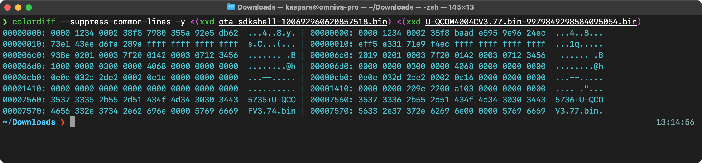
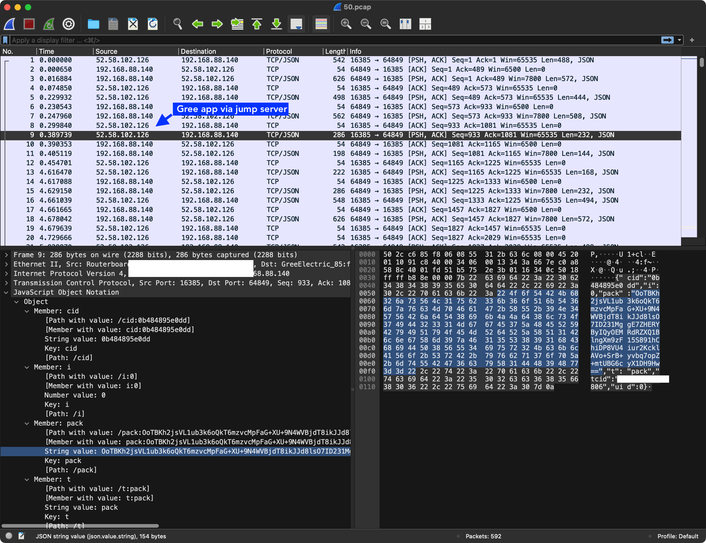
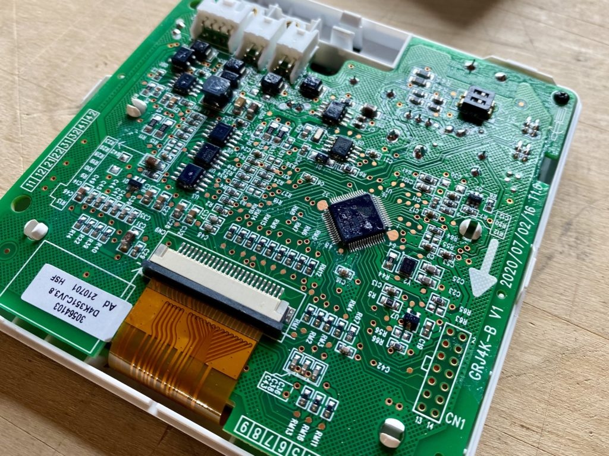
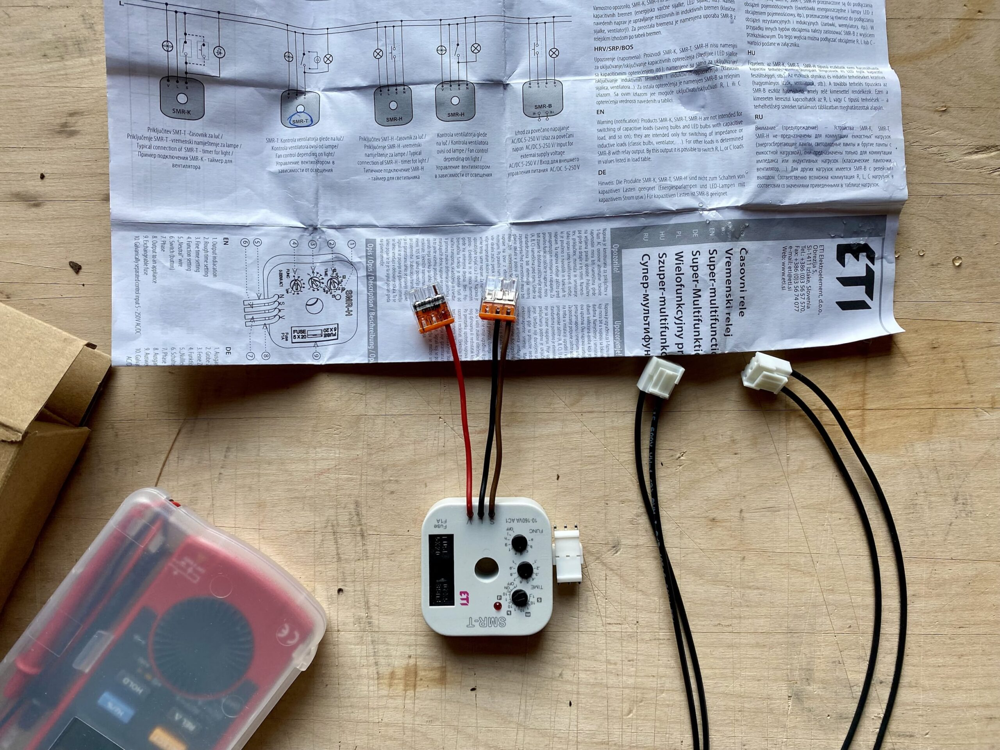

As part of an experiment to add domestic water heating capabilities to conventional mini-split ACs, I purchased an air-source heat pump Gree GWH09YD-S6DBA2A which has an inverter controlled compressor and an electronic expansion valve that allows it to work efficiently even down to -30℃ (-22℉).
- Model: GWH09YD-S6DBA2A (outdoor), S6DBA1A (indoor)
- Product code: CB466000100/CB466000102
- Cooling capacity: 2.7kW
- Heating capacity: 3.5kW
- Refrigerant: R32
- Remote model: YAG1FB3
Service Manual
Most of the technical information in this post has been retrieved from the official service manual:
Remote IR Receiver Module
Attached to the back of the inner block cover is a display module combined with an IR receiver. I was wondering if the IR receiver logic could be handled there and forwarded to the main PCB via something like UART. Turns out the LCD elements and the IR receiver diode run down to the main PCB so there is nothing to hijack.

IR Remote Protocol
I used an infrared photodiode attached directly to pins GND and D3 (which is pulled high) of Wemos D1 mini and the IRrecvDumpV3.ino sketch bundled with v2.8.1 of the IRremoteESP8266 library to decoded the messages.
Here are the infrared bit sequences captured by the Saleae logic analyser:

We can clearly see two sets of messages that are repeated twice. Each message has two parts and the first one starts with a longer sync header.
Initially it complained about the packets being too large to fit in the allocated buffer:
WARNING: IR code is too big for buffer (>= 1024). This result shouldn't be trusted until this is resolved. Edit & increase `kCaptureBufferSize`.
That is because of the kTimeout constant which is set to 50 by default and is 10ms above the actual period of 40ms between the groups of messages that we see in the logic analyser output above. By setting the value to 30:
const uint8_t kTimeout = 30;it started decoding the packets as expected:
Protocol : GREE
Code : 0x0C084070000000E0 (64 Bits)
Mesg Desc.: Model: 1 (YAW1F), Power: On, Mode: 4 (Heat), Temp: 24C, Fan: 0 (Auto), Turbo: Off, Econo: Off, IFeel: Off, WiFi: Off, XFan: Off, Light: Off, Sleep: Off, Swing(V) Mode: Manual, Swing(V): 0 (Last), Swing(H): 0 (Off), Timer: Off, Display Temp: 0 (Off)
uint16_t rawData[139] = {9004, 4474, 664, 540, 664, 540, 666, 1642, 664, 1644, 664, 542, 664, 540, 664, 542, 664, 542, 664, 542, 664, 542, 664, 542, 664, 1642, 664, 542, 664, 540, 666, 540, 664, 540, 664, 542, 664, 542, 664, 542, 664, 540, 664, 540, 664, 542, 664, 1642, 664, 542, 664, 540, 666, 540, 666, 540, 664, 540, 666, 1642, 664, 1642, 664, 1642, 664, 540, 664, 542, 664, 1642, 664, 540, 664, 19974, 664, 542, 664, 542, 664, 542, 664, 542, 664, 542, 664, 542, 662, 542, 662, 542, 664, 542, 664, 542, 664, 542, 664, 542, 662, 544, 662, 544, 662, 544, 662, 542, 662, 544, 662, 542, 662, 542, 662, 544, 662, 544, 662, 542, 664, 544, 662, 542, 662, 544, 662, 542, 662, 542, 664, 542, 662, 544, 662, 1644, 662, 1644, 662, 1644, 662}; // GREE
uint8_t state[8] = {0x0C, 0x08, 0x40, 0x70, 0x00, 0x00, 0x00, 0xE0};In the decoded bit timing sequence above we see a 9004us header mark followed by a 4474us space and then the actual message bits where the bit mark is 664us, logical 0 space is 542us, logical 1 space is 1642us and with 19974us between the two packets of the message.
Enabling the I-feel mode (where the remote sends the indoor temperature to the indoor unit) does append another packet to the end which isn’t parsed correctly, though:
Protocol : UNKNOWN
Code : 0x5EF985F1 (18 Bits)
uint16_t rawData[35] = {6008, 2986, 658, 546, 658, 548, 658, 548, 658, 1648, 658, 1648, 658, 546, 658, 548, 658, 548, 658, 1650, 658, 546, 658, 1648, 658, 546, 658, 548, 658, 1648, 658, 548, 658, 1648, 658};It appears that this packet is supported by the arduino-heatpumpir library. According to the GreeYACHeatpumpIR::send() method we’re expecting a header followed by two data bytes (using the following logic) and one closing GREE_YAC_BIT_MARK:
6008, 2986are the two header marks,658,546 | 658,548 | 658,548 | 658,1648 | 658,1648 | 658,546 | 658,548 | 658,548maps to0x00011000in binary which is24in decimal (the temperature measured by the remote).658,1650 | 658,546 | 658,1648 | 658,546 | 658,548 | 658,1648 | 658,548 | 658,1648maps to0b10100101or0xA5in hex as expected.658is the closingGREE_YAC_BIT_MARK.
Wi-Fi Module
There is a built-in Wi-Fi module which uses a protocol that has been reverse-engineered and enables full control over the local network once the unit has been added to the Wi-Fi network using the GREE+ app for iOS and Android. There is even a fully functional HomeAssistant integration.


The COM-MANUAL label and the four wires going to the module from the PCB indicate that this is possibly an UART-to-WIFI bridge. However, attaching the digital logic analyser probes to the dark-brown, light-brown and GND pins produced a lot of noise without clear indication of the data being transfered.
Wi-Fi Module Firmware
Initially the unit was reporting firmware version v1.00 and only in April 2023 it offered an update to v3.76 via the official Gree+ app which completed successfully.

In July 2023 it started showing an available update to v3.77 but I haven’t been able to apply it due to a network timeout after requesting the update.

There is a GitHub repository collecting all the firmware files which can be obtained from Gree servers in the same way the mobile app does it. The app uses the firmware version reported by the hid parameter such as 362001065736+U-QCOM4004CV3.76.bin for my unit where the first part 362001065736 is the firmwareCode that is used to check for a new version by making a GET request to:
http://grih.gree.com/wifiModule/Lastversion?firmwareCode=362001065736where grih.gree.com can be any of the local servers such as eu.grih.gree.com, for example. It returns a JSON blob:
{
"CreateDate": "2023-06-15 08:27:08",
"commProtVer": "V1.2.1",
"desc": "1、devLogin包中增加hid、ModelType、bc字段；\r\n2、连接调度服时优先使用1812端口（1812端口与5000端口轮换使用）；\r\n3、配网成功后不响应Wi-Fi开关。",
"forcedUpgrade": 1,
"frcUpgdType": 0,
"r": 200,
"url": "http://grih.gree.com/wifiModule/image/10528/145680",
"ver": "3.77"
}or for from the EU server:
{
"CreateDate": "2023-07-14 02:29:37",
"commProtVer": "V1.2.1",
"desc": "In this version, we have fixed some known issues.",
"forcedUpgrade": 0,
"r": 200,
"url": "http://eu.grih.gree.com/wifiModule/image/10141/145680",
"ver": "3.77"
}Notice how the firmware URLs are different! However, the contents of both files is identical as confirmed by checksums reported by the server (the FileMd5 response HTTP header):
$ curl -I http://grih.gree.com/wifiModule/image/10528/145680
HTTP/1.1 200 OK
Server: nginx/1.26.1
Date: Sun, 03 Nov 2024 12:08:45 GMT
Content-Type: application/octet-stream
Content-Length: 145680
Connection: keep-alive
Content-Disposition: attachment; filename="ota_sdkshell-1335624479074045096.bin"
Content-Range: bytes 0-145679/145680
FileMd5: f5ac9d07b5499dac210d550710f7ef2a
Strict-Transport-Security: max-age=31536000
X-Frame-Options: SAMEORIGIN
X-Content-Type-Options: nosniff
X-XSS-Protection: 1; mode=block
Cache-Control: no-cache
Set-Cookie: HttpOnly
Set-Cookie: Secureand:
$ curl -I http://eu.grih.gree.com/wifiModule/image/10141/145680
HTTP/1.1 200 OK
Date: Sun, 03 Nov 2024 12:09:19 GMT
Content-Type: application/octet-stream
Content-Length: 145680
Connection: keep-alive
Server: nginx
Content-Disposition: attachment; filename="U-QCOM4004CV3.77.bin-9979849298584095054.bin"
Content-Range: bytes 0-145679/145680
FileMd5: f5ac9d07b5499dac210d550710f7ef2a
supcc: 3324d648008ce504a8a519571dc2aa8e4816e5ae92c53100a3dd9052e9b9165c
Strict-Transport-Security: max-age=31536000
X-Frame-Options: SAMEORIGIN
X-Content-Type-Options: nosniff
X-XSS-Protection: 1; mode=block
Cache-Control: no-cache
Set-Cookie: HttpOnly
Set-Cookie: Secureand tested locally:
$ md5sum 3.77-eu.bin
f5ac9d07b5499dac210d550710f7ef2a 3.77-eu.bin
$ md5sum 3.77.bin
f5ac9d07b5499dac210d550710f7ef2a 3.77.binHaving access to these firmware files allows us to do all kinds of interesting things such find diffs between versions and extract string references using GNU binutils. Here are all the strings as text files for each version:
The most valuable find appears to be the QCOM4004 reference which points to only a few pages on the web, including this documentation for Alibaba Cloud platform and SDK.
It is interesting to see that the firmware codes don’t increase with each version — for example, the same code 362001065736 is used for versions 3.76, 3.77 and the test 3.78. It is also not clear why the difference between 3.74 and 3.77 is so tiny:

It is almost as if 3.77 rolls back 3.76 to 3.74.
Wi-Fi Firmware Update
The update process is initiated by the mobile app which connects to the unit via a jump server that helps with traversing the layers of NAT.

First, it fetches the hid attribute of the current firmware via an encrypted pack request:
{"cols":["Pow","Mod","TemUn","SetTem","TemRec","WdSpd","Tur","Quiet","SwUpDn","SwingLfRig","Air","Blo","Health","SvSt","Lig","StHt","SwhSlp","SlpMod","LigSen","UvcControl","Dmod","Dwet","ModelType","HeatCoolType","AllErr","AppTimer","AIEnSaveDis","hid"],"mac":"UNIT_MAC_ID","t":"status"}to which the unit responds with encoded:
{"t":"dat","mac":"UNIT_MAC_ID","r":200,"cols":["Pow","Mod","TemUn","SetTem","TemRec","WdSpd","Tur","Quiet","SwUpDn","SwingLfRig","Air","Blo","Health","SvSt","Lig","StHt","SwhSlp","SlpMod","LigSen","Dmod","Dwet","ModelType","HeatCoolType","AllErr","AppTimer","hid"],"dat":[0,4,0,19,0,5,0,0,0,1,0,0,0,0,0,0,0,0,0,0,0,32858,0,0,0,"362001065736+U-QCOM4004CV3.76.bin"]}after which the app does another pack request:
{"cols":["TemsSenOut","TemSen","DwatSen","FaultDisplay","AntiDirectBlow","hid","ElcEn","Slp1L1","Slp1H1","Slp1L2","Slp1H2","Slp1L3","Slp1H3","Slp1L4","Slp1H4","Slp1L5","Slp1H5","Slp1L6","Slp1H6","Slp1L7","Slp1H7","Slp1L8","Slp1H8"],"mac":"UNIT_MAC_ID","t":"status"}to which the unit responds with:
{"t":"dat","mac":"502cc685f806","r":200,"cols":["TemSen","DwatSen","hid","Slp1L1","Slp1H1","Slp1L2","Slp1H2","Slp1L3","Slp1H3","Slp1L4","Slp1H4","Slp1L5","Slp1H5","Slp1L6","Slp1H6","Slp1L7","Slp1H7","Slp1L8","Slp1H8"],"dat":[51,0,"362001065736+U-QCOM4004CV3.76.bin",160,0,160,0,160,0,160,0,160,0,160,0,160,0,160,0]}and then finally the app uses the data from the update sever mentioned above to send another encrypted pack payload:
{"t":"upgrade","url":"http://eu.grih.gree.com/wifiModule/image/10141/145680","mac":"UNIT_MAC_ID"}to which the unit responds with pack that is encrypted with the hard-coded a3K8Bx%2r8Y7#xDh key:
{"t":"ret","r":200,"mac":"502cc685f806"}Afterwards the app appears to wait for the unit to update itself (for a hardcoded period of time) and to eventually respond with an updated hid value matching the new firmware. However, in my case it never happens even if I send an upgrade request with a different firmware URL.
BMS and COM Manual Connections
There are two additional wire connections that are coming out of the PCB that are left not connected:
BMSwhich is potentially a Modbus or CAN connections for Building Management Systems.COM-MANUALwhich is designated as “Wired Controller (optional)” in the service manual.
There is a lot of potential for gaining full read-write access to the device through these ports but I haven’t gotten to that yet.


Wired Controller XK76
Some of the Gree models support wired controllers or thermostats in addition to the RF remotes. This indoor unit has two unpopulated connectors labeled BMS and (forgot the other one) in addition to the WIFI cable that is connected to the WIFI module.
The BMS connector is attached to the wired controller and it appears to be using some kind of serial protocol (potentially Modbus over RS485 similar to their commercial units) to communicate with the remote controller.
Unfortunately, it isn’t very clear which wired controllers support which indoor units especially because the model numbers don’t appear to be shared between units sold in EU and US, for example. Your best option is to review the service manual for the heat pump and determine the controller model by the picture. I decided to get what appeared to be the most recent version of the wired controllers XK76 and just hoped it would work with my device. And luckily it does!
Important: Make sure to turn off the heat pump completely before connecting the controller or it will return an error code E6 and fail to communicate with the device. I almost thought it just doesn’t work and put it on sale…

And here is the photo of the PCB which appears to have just a single microcontroller and three physical connection ports with matching drivers and a bunch of passives to drive the screen:

CN4 connector on the top-right is used to attach the communications cable. With markings GRJ4K-B on the PCB.And here is a photo of the main controller which appears to be NXP LPC3100 series ARM9:

Outdoor and Indoor Unit Communication
There is no official documentation for the communication protocol used between the indoor and outdoor units. Below are my findings based on reverse-engineering and the insight shared by other enthusiasts after publishing this post.
System Design
All of the heat pump control logic is handled by the outdoor unit while the indoor unit only requests heating or cooling and sends the temperature readings of the indoor heat exchanger as input for the outdoor control board.
The communication between the outdoor and indoor units happens via a DC signal referenced to the AC power ground.

Communication Protocol
I was able to attach an oscilloscope and record the following communication between the outdoor and indoor units. See this thread on Reddit for what others think.

It is using a 0-60V serial signal centered around 30V — the outdoor control board keeps the signal at 30V and the indoor unit pulls it low to 0V to send the data. For replies the outdoor unit pulls the signal high to 60V.
The logic analyser was able to decode the serial signal when set to LSB byte order, 1200 baud rate, 8 data bits, 1 stop bit and even parity.

Based on the functionality of the multifunctional inverter testers mentioned below, it should contain the following data:
- Operation mode (heating, cooling)
- Internal fan speed
- Set temperature
- Bus voltage (AC supply)
- Bus current
- Compressor frequency
- Expansion valve opening
- Module temperature (?)
- Inner ring temperature (?)
- Inner tube temperature (?)
- Outer ring temperature (?)
- Outer tube temperature (?)
- Exhaust temperature
- Cold inlet temperature (?)
The first byte indicates the type of the message (0x31 and 0x32 in the examples above) followed by the actual data bytes closed out by an 8-bit modulo 256 checksum byte. Here are the messages I’ve been able to decode:
Message 0x31 Source
| Byte | Hex | Decimal | Value | Description |
|---|---|---|---|---|
| 0 | 0x31 | 49 | Destination or source address? | |
| 1 | 0x20 | 32 | Destination or source address? | |
| 2 | 0 | 0 | ||
| 3 | 0x14 | 20 | Heating | Mode, 20=heat, 17=cool, 19=ventilation, ?=auto, ?=dry, fan-only=?, off=? |
| 4 | 0x8 | 8 | Auto | Fan speed, 1=low, 2=medium, 3=high, 4=turbo, 128=off, 8=auto? (low, medium low, medium, medium high, high) |
| 5 | 0 | 0 | ||
| 6 | 0x38 | 56 | 16 | Set temperature (value – 40) |
| 7 | 0x3C | 60 | 20 | Room temperature (value – 40) |
| 8 | 0 | 0 | ||
| 9 | 0x3A | 58 | 18 | Refrigerant temperature inside (value – 40) |
| 10 | 0x7 | 7 | ||
| 11 | 0 | 0 | ||
| 12 | 0 | 0 | ||
| 13 | 0 | 0 | ||
| 14 | 0 | 0 | ||
| 15 | 0 | 0 | ||
| 16 | 0 | 0 | ||
| 17 | 0 | 0 | ||
| 18 | 0 | 0 | ||
| 19 | 0x22 | 34 | 34 | CheckSum8 Modulo 256 |
Message 0x31 Reply
| Byte | Hex | Decimal | Value | Description |
|---|---|---|---|---|
| 0 | 0x31 | 49 | Destination or source address? | |
| 1 | 0x10 | 16 | Destination or source address? | |
| 2 | 0 | 0 | ||
| 3 | 0x14 | 20 | Heating | Mode, 20=heat, 17=cool, 19=ventilation, ?=auto, ?=dry, fan-only=?, off=? |
| 4 | 0x20 | 32 | 32 | Compressor frequency? |
| 5 | 0x5A | 90 | 90 | Outdoor fan frequency? |
| 6 | 0 | 0 | ||
| 7 | 0 | 0 | ||
| 8 | 0x1 | 1 | Unknown | |
| 9 | 0x23 | 35 | Unknown | |
| 10 | 0x61 | 97 | Unknown | |
| 11 | 0 | 0 | ||
| 12 | 0x33 | 51 | 11 | Outside temperature (value – 40) |
| 13 | 0x30 | 48 | 8 | Suction line temperature (value – 40) |
| 14 | 0x5C | 92 | 52 | Discharge line temperature (value – 40) |
| 15 | 0 | 0 | ||
| 16 | 0 | 0 | ||
| 17 | 0x4 | 4 | Unknown | |
| 18 | 0 | 0 | ||
| 19 | 0x17 | 23 | CheckSum8 Modulo 256 |
Message 0x32 Source
| Byte | Hex | Decimal | Value | Description |
|---|---|---|---|---|
| 0 | 0x32 | 50 | Destination or source address? | |
| 1 | 0x20 | 32 | Destination or source address? | |
| 2 | 0 | 0 | ||
| 3 | 0 | 0 | ||
| 4 | 0 | 0 | ||
| 5 | 0 | 0 | ||
| 6 | 0 | 0 | ||
| 7 | 0 | 0 | ||
| 8 | 0x11 | 17 | Unknown | |
| 9 | 0 | 0 | ||
| 10 | 0 | 0 | ||
| 11 | 0 | 0 | ||
| 12 | 0 | 0 | ||
| 13 | 0 | 0 | ||
| 14 | 0 | 0 | ||
| 15 | 0 | 0 | ||
| 16 | 0 | 0 | ||
| 17 | 0 | 0 | ||
| 18 | 0 | 0 | ||
| 19 | 0x63 | 99 | CheckSum8 Modulo 256 |
Message 0x32 Reply
| Byte | Hex | Decimal | Value | Description |
|---|---|---|---|---|
| 0 | 0x32 | 50 | Destination or source address? | |
| 1 | 0x10 | 16 | Destination or source address? | |
| 2 | 0 | 0 | ||
| 3 | 0 | 0 | ||
| 4 | 0 | 0 | ||
| 5 | 0 | 0 | ||
| 6 | 0 | 0 | ||
| 7 | 0 | 0 | ||
| 8 | 0 | 0 | ||
| 9 | 0 | 0 | ||
| 10 | 0 | 0 | ||
| 11 | 0 | 0 | ||
| 12 | 0x39 | 57 | Unknown | |
| 13 | 0 | 0 | ||
| 14 | 0 | 0 | ||
| 15 | 0 | 0 | ||
| 16 | 0 | 0 | ||
| 17 | 0xA | 10 | Unknown | |
| 18 | 0x36 | 54 | Unknown | |
| 19 | 0xBB | 187 | CheckSum8 Modulo 256 |
There are several other message types that I haven’t yet captured.
Portable and Multifunctional Tester for Inverter A/C
There appear to be several inverter tester tools which support the single wire communication used by multiple brands. The GT2D3AAa model is often referenced as the “new” version of the older model GZJ10D009 but I haven’t been able to confirm that. Importantly, GZJ10D009 is specifically branded by Gree:

And here is the “new” version:

Drain Pan Heater in Cold Climates
The outside unit contains a resistive heater for the drain pan which is turned on and draws constant 100W when the outside temperature falls below 0C (32F) even when the unit is not running or defrosting anything (there might be a setting that controls this but I haven’t been able to find it).

This leads to 2.4kWh of additional energy consumption per day which is unfortunate. Note that the heater is only for the drain pan and not the compressor so there is no reason it should be on for more than the defrost cycle and some time after it.

The compressor compartment and piping are really well insulated:


Notice how the 4WAY valve 220V switch is almost right next to the HEAT connection for the resistive heater so it should be possible to connect a timer relay which keeps the heater running only for 10 or 30 minutes after the defrost cycle.
Forums and Links
- Heat pump builder community on Facebook (in Polish) where people convert air-source mini-split heat pump to heat water for heating.
Hello. Have you tried to see the communication between the indoor unit and the controller with the program Gree Text Parser ?
I would also like to communicate with Gree using rs485.
Do you have any progress yet?
Regards
Yes, I did try to do that and posted my findings on Reddit. There seems to be valid UART data but I didn’t get to parse out any bits that would match the sensor data or the unit settings.
Thanks for the “Gree Text Parser” suggestion — I wasn’t aware it existing. I assume there must be tools for parsing the raw communication between the indoor and outdoor units for all Gree hardware but I just don’t have access to it.
If you have xk76 you could try to connect the converter usb/rs485 to line between indoor (terminal com-manual – middle wires)unit and xk76 and run the Gree Text Parser program. Maybe it will work for data preview.
If you want, I can share this program.
it is a chance to have Gree Text Parser ?
It should be part of this .iso file.
Very interesting! Have you done something with the drain pan heater?
Would be interested to hear how did you solve it?
I unplugged the PCB connector for the heater completely for now. Turns out that it takes more than a week of freezing temperatures for the defrost water to block all of the drain holes and for ice to start building up the heat exchanger fins. It would probably happen faster if it was set to more than 8C of target temperature.
The long term plan is to add this ETI SMR-T timer relay (or any similar timer relay) between the PCB connector and the heating element to turn on the heater only at regular intervals. Hiding the relay under the top cover of the outside unit would allow to adjust the timer intervals easily.
That sounds like a good plan! Do you know which type is the connector, or are there any other connectors that fit? From warranty POV it would be nice to find a matching connector pair.
In your earlier post from Oct 21, you talked about design questions like 1) whether a bypass valve would be needed or if toggling recirc on the water loop would be sufficient 2) determining optimal water flow rates through the plate exchanger
Did you get this working and arrive at any conclusions?
Hi, I have split AC Panasonic. Indoor and outdoor set. I tried to sniff data as well. It seems so the communication is the same or very similar. I had connected TTL to RS232 directly on MCU. Sniffed frames were 14 bytes as well. Last byte is maybe CRC. Voltage level between indoor and outdoor unit (1 wire) seems to be the same as at GREE. Pls, do you have somebody basic electrical wiring, how to connect to this wire and sniff both communication via TTL (indoor and outdoor)? First step. Second step – wiring for the sending data to outdoor unit via TTL. Thanks in advance.
Thanks for sharing this! This is great news. It would be really convenient if the signalling was similar between several brands.
I haven’t continued building the PCB for the communications so I don’t have an update there.
I´m sorry, I looked to my remarks. Frame is 20 bytes (I wrote 14).
1200 baud
For example:
10 00 00 00 00 E6 16 B0 B0 00 05 00 00 00 00 00 00 00 00 71
last byte (20) CRC CheckSum8 Modulo 256
but I can’t verify if my thoughts are correct :-(
Witam,
Jeśli mogę pomóc to dołączę do dyskusji.
Trochę skanowałem komunikację w GREE.
mam program w C# który odczytuje wartości z ramek transmisji.
This is great, thanks for sharing these! These look like the bytes starting with 0x31, 0x20 sent by the internal unit to the outdoor unit with just one byte missing which is probably the incoming or outgoing refrigerant temperature.
Were you able to decode the data sequence from the outdoor unit?
Have you looked at
https://github.com/bekmansurov/gree-hvac-protocol
https://github.com/bekmansurov/esphome_gree_hvac ?
It seems to be the wifi adapter uart communication.
@Grzegorz – generowałeś może ramki lub zmieniałeś ich zawartość ?
Hi, did you manage to solve the drip heater problem? I also have this Gree unit and it annoys me that the heater is constantly working when the temperature drops. Regards.
I got this ETI SMR-T timer relay to connect between the PCB control and the heater line, and set it to run for a limited amount of time whenever it is enabled.

Thank you my friend for sharing this valuable information. Could I ask you to e-mail me photos of how it was connected in your case and instructions on how to make this connection? I will be very grateful for your help and congratulations on your wonderful idea. My email is
[redacted]Best regards 😉Hi! Unfortunately, I don’t have any photos for this.
Hello and thanks for your detailed description of this AC unit. Did you use some other line for the signaling? My idea is that the timer would be turning on the heated pan when fan is spinning + 15 minutes (and ofc also only when temp is below 0). What do you think?
I decided to simply throttle the original pan AC power wire by adding the timer so it makes it run 20% or 50% of the original time it is supposed to be on.
It’s a bypity that we weren’t able to take photos as souvenirs for other users. I have another question, do you know how to turn off the sound signal in the indoor unit?
I have one more question, have you tested the modulation of your unit on heating and cooling? I have the same unit as you and in cooling mode it goes down beautifully with power up to 150-200W and runs smoothly without interruption, in heating mode the unit does not go below 550-600W which causes frequent switching on and off. I wonder if there is a way to improve the heating performance because according to the data sheets, the heating output should also be up to 140W.
I have the same observation — it is very bad at low-power heating and never drops below 600W. It appears to quickly heat up the air and modulate rapidly as it reaches the low and high threshold temperatures.
I was hoping that connecting the XK76 controller would make it use its sensor for the room temperature but it doesn’t appear to be happening, and I can’t really move the built-in temperature sensor to a different location.
I could try using the remote with the “I-feel” mode as it would then send the temperature readings from the remote. Will report back if I see an improved behaviour.
I’m waiting for your conclusions with Ifell because I also conducted a lot of tests and only by using an external IR remote control for Tuya and creating scenes in which the temperature of the unit with Ifell turned on is changed with a specific delay, I was able to achieve modulation. The pump has dropped to 250W and runs for 20 minutes, then it accelerates, reaches the set value and turns off. I haven’t managed to get it to work continuously, it always turns off after some time…
can you explain how did you managed to achieve this with ir control?
I’ve just disabled the pan by disconnecting the plug – no problems so far – (it was working like that whole prev season)
I’m running amber prestige 7kw modified as air into the water heat pomp
I bought an IR remote control on Aliexpress and made a diy remote control there. I taught all the functions of the remote control there, then I created scenes in Tuya and thanks to ifell being enabled, information about the temperature is sent in the remote control and in the Tuya application the scenes activate the appropriate functions with an appropriate delay, which causes modulation of the unit. It looks like this, when the temperature on the external thermometer connected to the tuya reaches x degrees, the scene starts: turn on heating 23 degrees, delay 10 seconds, turn on heating 19 degrees, delay 4 minutes, heating 21 degrees. After this start, the unit reduces to 250W and then slowly increases the power.
Hey could you tell as what remote u buy ? and what the sensor od temperature you use with the tuya to Control the temperature.
I used a simple IR (infrared) receiver diode like this to capture the signals sent by the original remote. I did not try to send the signal, though. For that you would need an emitting diode.
https://www.aliexpress.com/item/1005005019677684.html
I made a remote control for the DIY air conditioner in the application and learned various air conditioner settings with the ifell function enabled. It works great, the original remote control with the ifell function enabled starts the unit, when the application sees on the electricity meter that the unit has started, it starts a scene in which I have set breaks and temperature switching at the appropriate time, which causes modulation to 250W. It works like this for 20 minutes, then it reaches 550W and when it reaches the temperature, the air conditioning turns off, thanks to which the air conditioner turns on and off much less often.
hej Mateusz could you wirite to me? my email adress qlimax19866@gmail.com
Great reverse engineering !
After all I am curious if you’ve managed to control the Gree external unit just with the protocol?
I know there are some units e.g. XK117 or AHU com that can control Gree units, but apparently only U-match series.
@Grzegorz Krawczyk
How are you connecting to the message bus from C#? Do you have some USB signal reader that you can control from your program?
Thanks!
Has anyone had a problem with the unit defrosting cyclically every 50 minutes when the outside temperature dropped below +3? There is supposedly an algorithm in this device to manage when defrosting should be performed, and my device, despite working on a dry external exchanger and working at low power of about 500-600W, defrosts cyclically and completely unnecessarily.
I observe defrosts every 70 minutes depending on outdoor temperature. I think the algorithm is simple, so it does defrost even if it is not needed. To detect frosty heat exchanger the device would need to have more sensors and due to cost reasons they don’t install it.
The unpopulated BMS connector indeed should be Modbus, with a few tools and a bit of documentation online.
Should be slightly easier to RE than the remote bus.
I did get my Alpicair unit working with the XK76 wired remote, but the Modbus interface seems more promising.
Based on the pin labeling I’m actually thinking that XK76 is also using Modbus for the communication with the indoor unit which then deals with the outdoor unit.